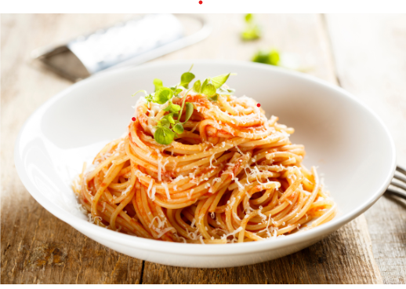

Penne al Pomodoro

Ingredienti
Di seguito riportiamo gli ingredienti per preparare il nostro piatto
- 320g di spaghetti
- 30g Olio extravergine d'oliva
- Basilico q.b
- 800g pomodori pelati
- 1 Spicchio aglio
- Sale fino q.b
Preparazione
- In una padella versate l'olio extravergine d’oliva insieme allo spicchio d'aglio sbucciato e diviso a metà .
- Dopo 2 minuti di cottura a fiamma viva, unite i pomodori pelati
- Scolare la pasta e saltarla in padella
- I vostri spaghetti al pomodoro sono pronti, non vi resta che impiattare e guarnire con basilico fresco a piacimento
- Servire il piatto